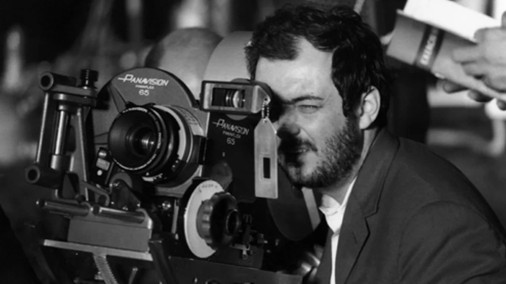

Cos'è davvero lo Stile di un regista?
Abbiamo studiato la messa in scena, la cinematografia, il montaggio e il suono. Lo Stile non è altro che l'uso ripetuto e sistematico di queste quattro tecniche. Quando un regista fa delle scelte tecniche specifiche che ritornano in tutto il film (o in tutta la sua carriera), crea la sua firma.
Se un regista usa molti piani sequenza, luci naturali e attori non professionisti, il suo stile sarà realistico (come nel Neorealismo italiano). Se usa montaggio frenetico, CGI, e luci colorate al neon, il suo stile sarà iper-cinetico (come nei film d'azione moderni o di Edgar Wright).
